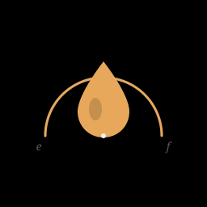
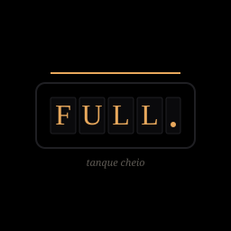

Três propostas de logo — escolha uma (ou peça ajustes em qualquer uma)
Iniciais "T" e "C" em estilo Bodoni editorial, com serifas finas.
Linha de "tanque cheio" preenchida em âmbar cruza embaixo.
Pequena marca "f." (full) à direita.
Caráter: sóbrio, editorial, atemporal. Funciona como assinatura.

Gota de combustível em âmbar dentro de um medidor semicircular preenchido até "F".
Marcas "e" e "f" em itálico nas extremidades.
Caráter: mais figurativo, conta a história do app de cara. Reconhecível como ícone pequeno.

Odômetro estilizado de painel vintage mostrando "FULL." em Bodoni âmbar.
Faixa de status iluminada no topo.
Caráter: mais conceitual, narrativo. Pode ficar pequeno demais nos ícones de 32px.